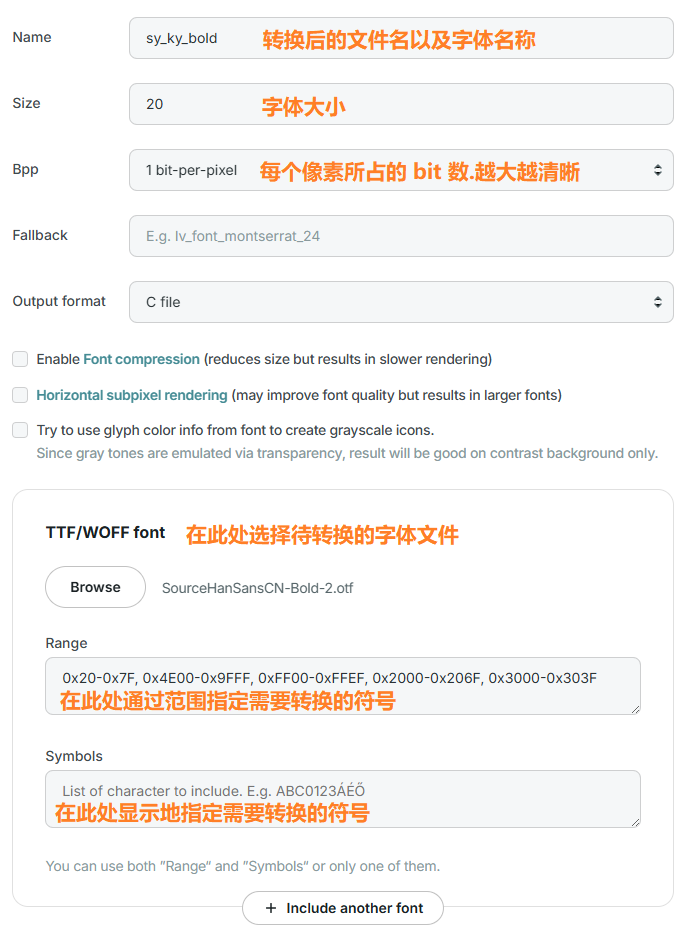

LVGL
LVGL
0 开发环境
0.1 简介
- LVGL(Light and Versatile Graphics Librar): 开源的嵌入式图形库.用于创建图形用户界面的嵌入式系统
- 轻量级: 设计用于资源受限的嵌入式系统,内存占用小
- 跨平台: 支持多种微控制器和显示器
- 丰富的组件: 按钮, 标签, 滑块, 图表, 列表等
- 硬件加速: 支持利用 GPU 加速图形渲染
- 开源免费: 遵循 MIT 许可证
- 技术规格
- 架构: 面向对象的 C 语言实现
- 内存需求
- 最低配置: ~16KB RAM, ~64KB Flash
- 推荐配置: ~48KB RAM, ~180KB Flash
- 支持的操作系统: 可裸机运行或与 FreeRTOS, Zephyr 等 RTOS 集成
- 显示支持: 单缓冲, 双缓冲, 直接模式.支持多显示器
- 输入设备: 触摸屏, 鼠标, 键盘, 编码器等
0.2 模拟器
使用模拟器依赖的源码(统一使用 v8.3)
- 模拟器源码(Eclipse with SDLdriver)
- LVGL 源码
- LVGL drivers 源码
将模拟器源码的文件解压得到
lv_port_pc_eclipse-release-v8.3目录- 将 LVGL 源码解压并复制到到
lvgl目录(原目录为空) - 将 LVGL drivers 源码解压并复制到到
lv_drivers目录(原目录为空)
- 将 LVGL 源码解压并复制到到
-
将
SDL2-devel-2.32.8-mingw.zip解压得到SDL2-2.32.8添加环境变量(指向 SDL 安装目录的
bin目录)1
D:\code\SDL2-2.32.8\x86_64-w64-mingw32\bin
下载安装 CMake(如
cmake-4.0.2-windows-x86_64.msi)将
main函数改名为SDL_main(SDL2 要求 Windows 平台的主函数必须是SDL_main)将
D:\code\SDL2-2.32.8\x86_64-w64-mingw32\bin\SDL2.dll动态链接文件复制到工程的bin目录下修改
CMakeLists.txt文件1
2
3
4
5
6
7
8
9
10
11
12
13
14
15
16
17
18
19
20
21
22
23
24
25
26
27
28
29
30
31
32
33
34
35
36
37
38
39
40
41cmake_minimum_required(VERSION 3.10)
# SDL2 配置
set(SDL2_DIR "D:/code/SDL2-2.32.8/r") # 指向 SDL2 的 cmake 目录
set(CMAKE_MODULE_PATH ${CMAKE_MODULE_PATH} "D:/code/SDL2-2.32.8/cmake")
project(lvgl)
set(CMAKE_C_STANDARD 11) # C11
set(CMAKE_CXX_STANDARD 17) # C17
set(CMAKE_CXX_STANDARD_REQUIRED ON)
# 包含头文件路径
include_directories(${PROJECT_SOURCE_DIR})
# 递归收集源文件和头文件
file(GLOB_RECURSE INCLUDES "lv_drivers/*.h" "lvgl/demos/*.h" "lvgl/*.h" "./*.h")
file(GLOB_RECURSE SOURCES "lv_drivers/*.c" "lvgl/demos/*.c" "lvgl/src/*.c")
# 设置输出目录
set(EXECUTABLE_OUTPUT_PATH ${PROJECT_SOURCE_DIR}/bin)
set(CMAKE_CXX_FLAGS "-O3")
# 查找 SDL2 并链接
find_package(SDL2 REQUIRED)
include_directories(${SDL2_INCLUDE_DIRS})
# 生成可执行文件(关键: 不启用 WIN32 子系统)
add_executable(main main.c mouse_cursor_icon.c ${SOURCES} ${INCLUDES})
add_compile_definitions(LV_CONF_INCLUDE_SIMPLE)
# 显式链接 SDL2 库(MinGW 需要 -mconsole)
if(MINGW)
target_link_options(main PRIVATE -mconsole) # MinGW 强制启用控制台
elseif(MSVC)
set_target_properties(main PROPERTIES LINK_FLAGS "/SUBSYSTEM:CONSOLE") # MSVC 强制控制台
endif()
# 链接 SDL2 库
target_link_libraries(main ${SDL2_LIBRARIES})
# 可选: 添加运行目标
add_custom_target(run COMMAND ${EXECUTABLE_OUTPUT_PATH}/main)编译执行代码(使用 CMake Tools 拓展生成)

0.3 启动流程
运行 demo
1
2
3
4
5
6
7
8
9
10
11
12
13
14
15
16
17
18
19
20
21
22int SDL_main(int argc, char **argv)
{
(void)argc; /*Unused*/
(void)argv; /*Unused*/
/*Initialize LVGL*/
lv_init();
/*Initialize the HAL (display, input devices, tick) for LVGL*/
hal_init();
LV_LOG_USER("hello, lvgl");
lv_demo_widgets();
while(1) {
/* Periodically call the lv_task handler.
* It could be done in a timer interrupt or an OS task too.*/
lv_timer_handler();
usleep(5 * 1000);
}
return 0;
}SDL_main: SDL2 的推荐入口函数,用于跨平台兼容性(Windows 需要此定义)lv_init(): 初始化 LVGL 的核心系统(内存管理, 内部数据结构等)- 必须第一个调用,之后才能设置硬件抽象层(HAL)或创建 UI
hal_init(): 配置 LVGL 与硬件的交互接口- 显示(Display): SDL2 创建的虚拟屏幕
- 输入设备(Input Device): 如鼠标, 键盘
- 心跳(Tick): 提供时间基准(如
SDL_Delay)
LV_LOG_USER: LVGL 的日志宏,输出到控制台(需在lv_conf.h中启用LV_USE_LOG)lv_timer_handler()- 处理定时器: 执行所有注册的 LVGL 定时器
- 屏幕刷新: 更新脏区域(dirty areas)并触发屏幕刷新
- 输入设备处理: 读取输入设备(如触摸屏, 键盘)事件
0.4 配置选项
lv_conf.h: LVGL 的核心配置文件- 用于自定义库的功能, 性能, 内存占用
- 允许开发者根据项目需求裁剪 LVGL 的功能, 从而优化资源使用
lvgl/lv_conf_template.h: LVGL 源码中提供了一个模板文件使用时需复制并重命名为
lv_conf.h,通常存放于与lvgl库同级的目录启用方式: 在
lv_conf.h开头取消注释以下宏(将 0 改为 1 即可)1
#if 0 /*Set it to "1" to enable content*/
关键参数
1
2
3
4
5
6
7
8
9
10
11/* Color depth: 1 (1 byte per pixel), 8 (RGB332), 16 (RGB565), 32 (ARGB8888) */
#define LV_COLOR_DEPTH 32
/* Default display refresh period. LVG will redraw changed areas with this period time */
#define LV_DISP_DEF_REFR_PERIOD 16 /*[ms] 1000 / 16 = 62.5fps */
/*Input device read period in milliseconds*/
#define LV_INDEV_DEF_READ_PERIOD 16 /*[ms] 1000 / 16 = 62.5fps */
/* Size of the memory available for `lv_mem_alloc()` in bytes (>= 2kB) */
#define LV_MEM_SIZE (128 * 1024U) /* [bytes] */LV_COLOR_DEPTH需要与显示屏控制器支持的格式一致LV_INDEV_DEF_READ_PERIOD应 ≤LV_DISP_DEF_REFR_PERIOD.确保输入事件能被及时处理LV_MEM_SIZE不支持动态拓展内存池大小,必须在初始化时固定(因为是静态数组)
0.5 日志模块
- 日志级别
1 | |
- 输出方式
1 | |
- 使用方式
1 | |
0.6 文件系统
文件系统: 在 LVGL 中启用 标准 C 文件系统 API(如 fopen / fread) 的支持
1
#define LV_USE_FS_STDIO 1 // 1: 启用, 0: 禁用- 作用: 开启基于
stdio.h(如fopen, fread)的文件系统驱动 - 依赖: 需确保目标平台支持标准 C 文件操作(嵌入式系统可能需要实现这些函数)
- 作用: 开启基于
驱动器字母映射(将逻辑驱动器号(如
'A')映射到物理文件系统路径)
1 | |
- 工作路径: 指定文件系统的根目录路径.LVGL 会将所有文件路径附加到该路径后
1 | |
- 缓存大小
1 | |
- 完整示例
1 | |
- 使用示例
1 | |
- 若标准
stdio不满足需求(如 ROM 文件系统),可参考lv_fs_stdio.c实现自定义驱动
1 对象
1.1 基类
LVGL 中,
lv_obj_t是所有控件的基类(类似于面向对象编程中的父类)- 是构建用户界面的最基本元素
- 所有控件(如按钮, 标签, 滑块等)都继承自
lv_obj_t
创建对象
1
2lv_obj_t *screen = lv_scr_act(); // 获取当前屏幕.是没有父对象的特殊 lv_obj_t
lv_obj_t *obj = lv_obj_create(screen); // 在获取的屏幕上创建一个对象删除对象
1
lv_obj_del(obj);- 删除对象本身及其所有子对象(递归删除整个子树)
- 自动解除与父对象, 组, 动画等的关联
- 释放对象占用的内存资源(如果使用 LVGL 的动态内存分配)
- 触发相关事件(如
LV_EVENT_DELETE)
父子关系
1
2
3
4
5
6
7
8
9
10
11/* 设置父对象 */
lv_obj_set_parent(obj, new_parent);
/* 获取子对象 */
lv_obj_t *child = lv_obj_get_child(parent, index);
/* 遍历所有子对象 */
lv_obj_t *child;
LV_ITERATE_CHILDREN(child, parent) {
// 处理每个子对象
}- 父对象通常是容器.如
lv_obj_t, lv_cont_t或屏幕lv_scr_act() - 视觉层级: 子对象永远显示在父对象之上
- 坐标系统: 子对象的坐标是相对于父对象的,移动父对象时所有子对象会同步移动,无需逐个调整
- 继承属性: 子对象默认继承父对象的部分属性(如坐标相对父对象偏移, 是否可见, 是否启用等)
- 事件传递机制: 事件会从子对象向父对象冒泡(除非被拦截),方便实现复杂交互
- 管理生命周期: 删除父对象时会自动递归删除所有子对象
- 父对象通常是容器.如
1.2 位置
坐标系: 以左上角为原点 (0,0); 向右为正方向; 向下为正方向
1
2lv_coord_t x = lv_obj_get_x(obj);
lv_coord_t y = lv_obj_get_y(obj);位置设置
1
2
3lv_obj_set_pos(obj, 100, 50); // 设置绝对坐标.从父对象的偏移 (100, 50) 像素
lv_obj_set_x(obj, x); // 仅设置X
lv_obj_set_y(obj, y); // 仅设置Y盒子模型: LVGL遵循CSS的 border-box 模型

对齐设置
1
2
3
4
5// 基本对齐.对齐后仍然可以设置位置
lv_obj_set_align(obj, align);
// 对齐到特定对象
lv_obj_align_to(obj, base, align, x_ofs, y_ofs);
1.3 尺寸
尺寸获取
1
2lv_coord_t width = lv_obj_get_width(obj);
lv_coord_t height = lv_obj_get_height(obj);尺寸设置
1
2lv_obj_set_size(obj, width, height); // 同时设置宽高
lv_obj_set_size(obj, LV_PCT(100), LV_PCT(100)); // 设置为父对象的相对大小特殊尺寸设置
1
2
3
4
5
6
7
8
9
10// 根据内容自动调整大小
lv_obj_update_layout(obj); // 强制重新计算布局
lv_obj_refr_size(obj); // 刷新对象尺寸
// 设置尺寸模式
lv_obj_set_width_fit(obj, LV_SIZE_CONTENT); // 宽度适应内容
lv_obj_set_height_fit(obj, LV_SIZE_CONTENT); // 高度适应内容
// 扩大对象的可点击区域
lv_obj_set_ext_click_area(obj, left, right, top, bottom);
1.4 布局
Flex: 以单行或单列方式动态排列子控件,自动处理空间分配和对齐.适合列表,工具栏main axis: 主轴.默认为水平方向cross axis: 交叉轴.与主轴垂直
1
2
3
4
5
6
7
8
9
10
11
12
13
14/* 创建 Flex 容器 */
lv_obj_t *cont = lv_obj_create(lv_scr_act());
lv_obj_set_size(cont, 300, 200);
lv_obj_set_flex_flow(cont, LV_FLEX_FLOW_ROW_WRAP); // 行排列.自动换行
/* 添加子控件 */
lv_obj_t *btn1 = lv_btn_create(cont);
lv_obj_t *btn2 = lv_btn_create(cont);
lv_obj_t *btn3 = lv_btn_create(cont);
/* 设置子控件弹性属性 */
lv_obj_set_flex_grow(btn1, 1); // btn1 占据剩余空间的1/4
lv_obj_set_flex_grow(btn2, 2); // btn2 占据剩余空间的2/4
lv_obj_set_flex_grow(btn3, 1); // btn2 占据剩余空间的1/4Grid: 通过行和列的二维网格系统精确控制子控件位置,适合复杂布局1
2
3
4
5
6
7
8
9
10
11
12
13
14
15
16
17
18
19
20
21
22
23
24
25
26
27/* 创建 Grid 容器 */
lv_obj_t *cont = lv_obj_create(lv_scr_act());
lv_obj_set_size(cont, LV_PCT(100), LV_PCT(100)); // 全屏
lv_obj_set_layout(cont, LV_LAYOUT_GRID); // 启用 Grid 布局
/* 定义网格列: 左侧卡片(占2份弹性空间) + 右侧卡片(占1份弹性空间) */
static lv_coord_t col_dsc[] = {LV_GRID_FR(2), LV_GRID_FR(1), LV_GRID_TEMPLATE_LAST};
/* 定义网格行: 标题行高 40px + 内容区弹性填充 */
static lv_coord_t row_dsc[] = {40, LV_GRID_FR(1), LV_GRID_TEMPLATE_LAST};
lv_obj_set_grid_dsc_array(cont, col_dsc, row_dsc); // 应用网格定义
/* 创建标题栏.居中显示.定位到第0行,跨2列 */
lv_obj_t *title = lv_label_create(cont);
lv_label_set_text(title, "title");
lv_obj_set_grid_cell(title, LV_GRID_ALIGN_CENTER, 0, 2, LV_GRID_ALIGN_CENTER, 0, 1);
/* 创建温度显示栏.定位到第1行第0列 */
lv_obj_t *temp_card = lv_obj_create(cont);
lv_obj_t *temp_label = lv_label_create(temp_card);
lv_label_set_text_fmt(temp_label, "temperature\n%d", 25);
lv_obj_set_grid_cell(temp_card, LV_GRID_ALIGN_STRETCH, 0, 1, LV_GRID_ALIGN_STRETCH, 1, 1);
/* 创建湿度显示栏.定位到第1行第1列 */
lv_obj_t *humi_card = lv_obj_create(cont);
lv_obj_t *humi_label = lv_label_create(humi_card);
lv_label_set_text_fmt(humi_label, "humidity\n%d%%", 60);
lv_obj_set_grid_cell(humi_card, LV_GRID_ALIGN_STRETCH, 1, 1, LV_GRID_ALIGN_STRETCH, 1, 1);
1.5 图层
LVGL 的图层系统是管理对象显示层级和特殊覆盖界面的核心机制,它构成了屏幕内容的立体堆叠结构

- 固定层级关系: 系统维护严格的 z 轴顺序
- 全局共享: 所有屏幕共用同一组图层
- 事件穿透: 高层可拦截低层的事件
- 独立渲染: 每层单独合成最终图像
图层类型
图层类型 描述 典型用途 访问函数 基础层(Base) 默认对象层 常规 UI 内容 lv_scr_act()顶部层(Top) 覆盖层 系统状态栏 lv_layer_top()系统层(Sys) 最高优先级 弹窗, 菜单 lv_layer_sys()获取图层对象
1
2
3lv_obj_t *scr = lv_scr_act();
lv_obj_t *layer_top = lv_layer_top();
lv_obj_t *layer_sys = lv_layer_sys();图层控制
1
2
3
4
5
6
7
8
9// 设置图层可见性
lv_obj_add_flag(lv_layer_top(), LV_OBJ_FLAG_HIDDEN); // 隐藏顶部层
lv_obj_clear_flag(lv_layer_sys(), LV_OBJ_FLAG_HIDDEN); // 显示系统层
// 移动对象到其他图层
lv_obj_move_to_layer(obj, lv_layer_sys()); // 提升到系统层
// 获取对象所在图层
lv_layer_t * layer = lv_obj_get_layer(obj);
1.6 事件
事件类型
事件类型 触发场景 常见事件码 输入事件 用户触摸, 按键, 编码器操作 LV_EVENT_PRESSED, LV_EVENT_CLICKED绘图事件 对象需要刷新显示时 LV_EVENT_REFRESH, LV_EVENT_DRAW_MAIN控件特定事件 特定控件独有的行为(如滑块值改变) LV_EVENT_VALUE_CHANGED(滑块)系统事件 对象生命周期变化(创建, 删除, 动画完成) LV_EVENT_DELETE, LV_EVENT_READY事件回调: 通过
lv_obj_add_event_cb()为对象绑定事件处理函数1
2
3
4
5
6
7
8
9
10
11
12
13
14
15
16
17static void event_handler(lv_event_t * e) {
lv_obj_t *obj = lv_event_get_target(e); // 获取触发事件的对象
lv_event_code_t code = lv_event_get_code(e); // 获取事件类型
int *data = (int *)lv_event_get_user_data(e); // 获取用户数据
/* 根据事件类型,进行相应处理 */
switch(code) {
case LV_EVENT_CLICKED:
LV_LOG_USER("Button clicked!");
break;
case LV_EVENT_VALUE_CHANGED:
LV_LOG_USER("Value changed!");
break;
default:
break;
}
}监听事件: 以按钮的点击事件为例(可以监听多个事件)
1
2
3int my_data = 42; // 用户数据,可以有多种类型
lv_obj_t * btn = lv_btn_create(lv_scr_act());
lv_obj_add_event_cb(btn, event_handler, LV_EVENT_CLICKED | LV_EVENT_PRESSED, &my_data);手动触发: 以
值改变事件为例1
lv_event_send(obj, LV_EVENT_VALUE_CHANGED, "Custom data");事件传递
- 冒泡传递(Bubbling): 若子对象未处理事件(返回
lv_RES_INV),则事件向父对象传递 - 事件穿透: 对于透明或不可点击区域,可通过返回
lv_RES_INV允许事件传递到底层对象
- 冒泡传递(Bubbling): 若子对象未处理事件(返回
2 样式
2.1 样式概念
样式: 是构建美观界面的核心.LVGL 采用类似 CSS 的样式机制,可以灵活控制对象的外观表现
- 层级化: 支持多个样式叠加
- 状态敏感: 不同状态(如按下, 禁用)可应用不同样式
- 继承机制: 子对象可继承父对象的部分样式属性
- 低内存占用: 样式可被多个对象共享
样式属性分类
- 大小与布局: 宽度, 高度, 对齐等
- 背景: 颜色, 透明度, 渐变等
- 边框: 宽度, 颜色, 圆角等
- 文本: 字体, 颜色, 对齐等
- 特效: 阴影, 模糊, 透明度动画等
基础使用方式(创建一个
textarea并添加style)1
2
3
4
5
6
7
8
9
10
11
12
13
14
15
16
17
18
19
20
21
22
23
24
25
26
27
28
29/* 样式初始化 */
static lv_style_t style;
lv_style_init(&style);
/* 设置背景样式 */
lv_style_set_radius(&style, 8); // 圆角半径
lv_style_set_bg_opa(&style, LV_OPA_COVER); // 不透明度
lv_style_set_bg_color(&style, lv_color_hex(0xF5F5F5)); // 浅灰色背景
/* 设置边框样式 */
lv_style_set_border_width(&style, 2); // 边框宽度
lv_style_set_border_color(&style, lv_color_hex(0xCCCCCC)); // 边框颜色
/* 设置文本样式 */
lv_style_set_text_color(&style, lv_color_black()); // 黑色文本
lv_style_set_text_font(&style, &lv_font_montserrat_16); // 字体
/* 设置内边距 */
lv_style_set_pad_all(&style, 10); // 四周内边距
/* 创建文本框对象 */
lv_obj_t *textarea = lv_textarea_create(lv_scr_act());
lv_obj_set_size(textarea, 200, 80); // 大小
lv_obj_center(textarea); // 居中对齐
lv_textarea_set_placeholder_text(textarea, "please input..."); // 提示文本
lv_textarea_set_one_line(textarea, true); // 允许单行模式(按需使用)
/* 应用样式 */
lv_obj_add_style(textarea, &style, 0);
2.2 样式状态
添加样式时其状态参数决定了样式何时生效
1
void lv_obj_add_style(lv_obj_t * obj, lv_style_t * style, lv_state_t state);状态参数(
lv_state_t)是位掩码,因此可以组合使用状态 描述 LV_STATE_DEFAULT(0x0000)默认状态 LV_STATE_CHECKED(0x0001)切换 / 选中状态 LV_STATE_FOCUSED(0x0002)通过键盘或编码器聚焦 LV_STATE_FOCUS_KEY(0x0004)通过键盘聚焦 LV_STATE_EDITED(0x0008)由编码器编辑 LV_STATE_HOVERED(0x0010)鼠标悬停(未按下) LV_STATE_PRESSED(0x0020)被按下 LV_STATE_SCROLLED(0x0040)正在滚动 LV_STATE_DISABLED(0x0080)禁用状态 多样式示例
1
2
3
4
5
6
7
8/* 应用到按钮的默认状态 */
lv_obj_add_style(btn, &style_btn, LV_STATE_DEFAULT);
/* 应用到悬停状态 */
lv_obj_add_style(btn, &style_hover, LV_STATE_HOVERED);
/* 应用到按下 + 聚焦状态 */
lv_obj_add_style(btn, &style_pressed_focused, LV_STATE_PRESSED | LV_STATE_FOCUSED);
2.3 样式部件
样式部件(style parts): 可以单独设置样式的对象组成部分.如
- 按钮由主体(MAIN)和指示器(INDICATOR)组成
- 滑块由主体(MAIN), 指示器(INDICATOR)和旋钮(KNOB)组成
常见样式部件
部件 描述 适用对象 LV_PART_MAIN主体部分 所有对象 LV_PART_SCROLLBAR滚动条 可滚动容器 LV_PART_INDICATOR指示器 滑块, 开关等 LV_PART_KNOB旋钮 滑块, 旋钮等 LV_PART_SELECTED选中项 列表, 表格等 LV_PART_ITEMS子项 列表, 菜单等 多部件样式示例(精确控制
slide的指示器部分)1
2
3
4
5
6
7
8
9
10
11
12
13
14
15
16
17
18// 创建样式
static lv_style_t style_main;
static lv_style_t style_indicator;
// 初始化主体样式
lv_style_init(&style_main);
lv_style_set_bg_color(&style_main, lv_palette_main(LV_PALETTE_BLUE));
lv_style_set_radius(&style_main, 5);
// 初始化指示器样式
lv_style_init(&style_indicator);
lv_style_set_bg_color(&style_indicator, lv_palette_main(LV_PALETTE_RED));
// 应用到滑块对象
lv_obj_t *slider = lv_slider_create(lv_scr_act());
lv_obj_set_align(slider, LV_ALIGN_CENTER);
lv_obj_add_style(slider, &style_main, LV_PART_MAIN); // 主体部分
lv_obj_add_style(slider, &style_indicator, LV_PART_INDICATOR); // 指示器部分
2.4 样式管理
本地样式(Local Styles): 直接为对象设置样式属性,而无需创建独立的样式结构体
1
2lv_obj_set_style_bg_color(obj, lv_palette_main(LV_PALETTE_GREEN), 0); // 颜色
lv_obj_set_style_text_font(obj, &lv_font_montserrat_20, 0); // 字体样式继承
1
2
3
4
5
6
7
8
9
10/* 创建基础样式 */
static lv_style_t style_base;
lv_style_init(&style_base);
lv_style_set_bg_opa(&style_base, LV_OPA_COVER);
/* 创建继承样式 */
static lv_style_t style_child;
lv_style_init(&style_child);
lv_style_set_bg_color(&style_child, lv_palette_main(LV_PALETTE_RED));
lv_style_set_parent(&style_child, &style_base); // 继承基础样式样式组织
1
2
3
4
5
6
7
8
9
10
11/* 按功能组织样式 */
static lv_style_t style_card; // 卡片样式
static lv_style_t style_btn_primary; // 主要按钮
static lv_style_t style_btn_secondary; // 次要按钮
static lv_style_t style_text_title; // 标题文本
static lv_style_t style_text_body; // 正文文本
/* 按状态组织样式 */
static lv_style_t style_btn_default;
static lv_style_t style_btn_pressed;
static lv_style_t style_btn_disabled;性能优化
- 共享样式: 多个相似对象使用同一个样式实例
- 避免频繁修改: 在界面初始化时集中设置样式
- 使用样式缓存: 对频繁切换的样式预先创建好
- 合理使用过渡动画: 避免同时激活过多动画效果
3 控件
3.1 标签
文本显示
1
2
3
4
5lv_obj_t *label = lv_label_create(lv_scr_act()); // 在屏幕上创建 label 对象
lv_label_set_text(label, "hello, lvgl"); // 文本内容
lv_obj_align(label, LV_ALIGN_CENTER, 0, 0); // 居中对齐
lv_obj_set_style_text_color(label, lv_color_hex(0xFF0000), 0); // 字体颜色
lv_obj_set_style_text_font(label, &lv_font_montserrat_20, 0); // 字体及大小中文支持: lvgl 自带的字库并不支持中文显示.需要创建自己的字体库
进入字体在线转换网站进行字体转换(转换完成后将得到一个
.c文件,将其加入工程)- 英文字母, 数字, 基本标点符号(与 ASCII 编码兼容): 0x20-0x7F
中日韩统一表意文字区块包含了汉字(20992个汉字): 0x4E00-0x9FFF- 全角和半角区块: 0xFF00-0xFFEF
- 通用标点区块(引号等): 0x2000-0x206F
- CJK 符号和标点区块(句号等): 0x3000-0x303F
中文显示只需要知名使用的字体即可
1
2
3
4LV_FONT_DECLARE(sy_ky_bold); // 声明外部字体.这里使用的是 思源黑体等宽版
lv_obj_t * label = lv_label_create(lv_scr_act()); // 创建 label 对象
lv_obj_set_style_text_font(label, &sy_ky_bold, 0); // 使用 sy_ky_bold 字体
lv_label_set_text(label, "好好学习，\n天天向上。"); // 设置中文文本
3.2 图片
进入图片转换在线网站进行图片转换(
Color format选择CF_TRUE_COLOR.转换完成后将得到一个.c文件,将其加入工程)
图片显示
1
2
3LV_IMG_DECLARE(abao); // 声明图片数据
lv_obj_t* img = lv_img_create(lv_scr_act()); // 创建 img 对象
lv_img_set_src(img, &abao); // 设置图片源数据gif 显示: 转换 gif 格式数据时
Color format选择CF_RAW(转换完成后将得到一个.c文件,将其加入工程)使用 gif 图像生成文件步骤与上面的 image 生成步骤完全相同(需要在
lv_conf.h文件中开启 GIF 功能)1
2/*GIF decoder library*/
#define LV_USE_GIF 1显示 gif
1
2
3LV_IMG_DECLARE(astronauts); // 声明图片数据
lv_obj_t* gif = lv_gif_create(lv_scr_act()); // 创建 gif 对象
lv_gif_set_src(gif, &astronauts); // 设置 gif 图片源数据
3.3 按钮
按钮基础功能
1
2
3
4
5lv_obj_t *button = lv_btn_create(lv_scr_act()); // 创建 button 对象
lv_obj_align(button, LV_ALIGN_CENTER, 0, 0); // 设置 button 对齐
lv_obj_t *label = lv_label_create(button); // 创建 label 对象
lv_label_set_text(label, "Toggle"); // 设置 label 文本内容按钮状态系统
状态标志 描述 触发条件 LV_STATE_DEFAULT默认状态 初始状态 LV_STATE_PRESSED按下状态 用户按下按钮 LV_STATE_CHECKED选中状态 按钮被选中(需设置 CHECKABLE) LV_STATE_DISABLED禁用状态 按钮被禁用 LV_STATE_FOCUSED焦点状态 按钮获得焦点 LV_STATE_EDITED编辑状态 对象正在被编辑 1
2
3
4
5
6
7
8/* 添加状态(可以有多个状态) */
lv_obj_add_state(btn, LV_STATE_CHECKED | LV_STATE_FOCUSED);
/* 移除状态 */
lv_obj_clear_state(btn, LV_STATE_CHECKED);
/* 检查状态 */
bool is_checked = lv_obj_has_state(btn, LV_STATE_CHECKED);事件处理
1
2
3
4
5
6
7
8
9
10
11
12
13
14
15
16
17
18
19
20
21/* clicked 事件回调函数.改变 label 的 text */
void button_handler(lv_event_t * e) {
lv_obj_t *obj = lv_event_get_target(e);
if(lv_event_get_code(e) == LV_EVENT_CLICKED) {
lv_obj_t *label = lv_obj_get_child(obj, 0); // 获取按钮的第一个子对象(即 label)
if(label && lv_obj_check_type(label, &lv_label_class))
lv_label_set_text(label, "clicked");
}
}
void test_button(void) {
lv_obj_t *button = lv_btn_create(lv_scr_act()); // 创建 button 对象
lv_obj_align(button, LV_ALIGN_CENTER, 0, 0); // 设置 button 对齐
lv_obj_add_flag(button, LV_OBJ_FLAG_CHECKABLE); // 设置 button 可被选中
lv_obj_add_event_cb(button, button_handler,
LV_EVENT_CLICKED, NULL); // 绑定 clicked 事件
lv_obj_t *label = lv_label_create(button); // 创建 label 对象
lv_label_set_text(label, "Toggle"); // 设置 label 文本内容
}